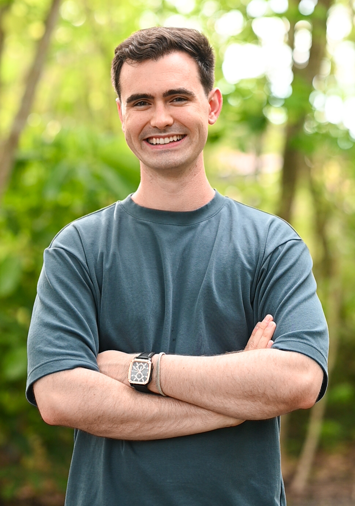

Noah Corbett
Doctoral Candidate
Florida Atlantic University
Department of Mathematics and Statistics
-
Hi there! I'm a final-year doctoral candidate studying computational dynamical systems. My advisors are Vincent Naudot and Jason Mireles-James. On April 1, 2026, I succesfully defended my dissertation, titled "A Computational Approach to Periodic Orbits of State-Dependent Delay Differential Equations."
-
My research focuses on theoretical and numerical techniques to compute and validate rigorous solutions structures in chaotic dynamical systems.
In particular, I employ computer-assisted proofs and develop numerical algorithms to rigorously study nonlinear ordinary differential equations, travelling wave solutions of partial differential equations, and
state-dependent delay differential equations.
-
I also work with statistical and machine learning techniques to study nonlinear equations. Alongside researchers with the U.S. Army Corps of Engineers, I developed a cryptanalytic-inspired method for forecasting state switches
in data-driven chaotic systems. I am currently interested in pursuing quantitative research, and in particular how to apply these numerical, statistical, and machine learning tools to study the financial markets.